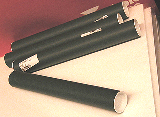

|
Oeuvres
roulées (transport)
Les
papiers plus lourds gagnent grandement à être placés dans un carton à
dessins. Pour les grands formats, l'achat d'un porte-carton (sorte de
poignée rendant le carton à dessins transportable) peut se révéler indispensable. Le carton à dessin est un
investissement peu coûteux rendant service non seulement pour le transport,
mais aussi pour le stockage (lire Stockage,
conservation, restauration).
Expédition

Plusieurs objets et
procédés peuvent
être utilisés et combinées :
* le tube en carton, parfois chimiquement acide, pas toujours très facile à trouver dans le commerce
et de diamètre beaucoup trop étroit la plupart du temps (voir photo). De
plus, il est souvent en rupture de stock chez les fournisseurs
* la gouttière en PVC : différents commerces
(bricolage, plomberie) proposent des diamètres
variés, ce qui peut faciliter l'expédition de certaines oeuvres ne
pouvant être roulées trop serrées. C'est une solution éprouvée, fort
valable, dont nous avons eu les meilleurs échos.
* le carton ondulé "une face", qui
peut se rouler autour d'un tableau roulé. Il amortit bien les chocs mais
n'apporte pas beaucoup de rigidité.
* le cylindre en bois ou métallique (ou autre
matériau dur) placé au centre du rouleau pour solidifier l'ensemble, précaution
salutaire pour l'envoi par avion en particulier, mais pour les autres transports
également. C'est un "noyau dur" qui évite différents types d'accidents.
Les
tableaux n'aiment pas être roulés
Dans tous les cas, ATTENTION : un tableau roulé est
un tableau martyrisé. Les lésions sont
à peu près invisibles dans l'immédiat,
mais la fracture de la pâte et des vernis est réelle.
Si l'opération est cependant nécessaire, l'oeuvre doit être roulée de
préférence face
peinte vers l'extérieur du rouleau pour éviter les lésions par
compression, plus graves et plus apparentes que les lésions par extension.
Adhérence et autres phénomènes
L'huile colle ! Même lorsque la surface parait parfaitement sèche, elle
conserve une viscosité. De même, l'acrylique qui est microporeuse peut être
concernée par des phénomènes liés au contact du verso.
Pour éviter que les fibres de la toile
n'adhèrent ou n'interagissent, on peut intercaler une feuille de
papier paraffiné.
Concernant l'huile, il vaudrait mieux ne pas rouler un
tableau ayant moins de deux ans d'âge (sauf matière très maigre) et surtout le
laisser le moins longtemps possible roulé. L'acrylique en empâtement peut
demander un temps de polymérisation de l'ordre de plusieurs mois. Quel que soit
le procédé de peinture, la couche picturale doit être parfaitement sèche et
polymérisé.
A lire à ce
sujet :
Toiles sans châssis, roulage
in Courrier des Lecteurs
Remettre
à plat un papier qui a pris une forme
Un papier ayant pris une forme suite à un roulage trop serré ou un stockage
trop long en rouleau peut généralement être remis à plat au fer
à repasser (à basse température). Il faut cependant spécifier que ce traitement ne doit pas être
appliqué lorsqu'il s'agit de papiers fragiles ou précieux : le remède serait
pire que le mal ! Même dans les autres cas, il est conseillé de faire quelques
essais préalables sur un échantillon témoin permettant de déterminer la température idéale.
Retour
début de page
|